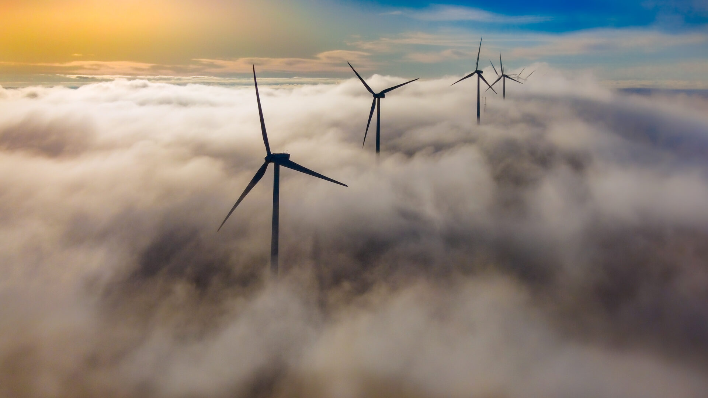

La energía eólica es aquella que se obtiene a partir de la fuerza del viento. Se produce mediante aerogeneradores que transforman la energía cinética del viento en electricidad. El rotor del aerogenerador gira gracias al viento, generando energía mecánica que luego se transforma en energía eléctrica mediante un generador. Es una energía renovable que contribuye a la transición energética y a la descarbonización del planeta.

La radiación solar no calienta toda la Tierra de la misma forma. Algunas zonas se calientan más que otras, lo que provoca diferencias de presión en el aire. Estas diferencias hacen que el aire se mueva generando el viento. Este movimiento del aire puede ser aprovechado mediante aerogeneradores para producir energía eléctrica.
No produce gases contaminantes ni emisiones dañinas para el medio ambiente.
El viento es un recurso natural que se renueva constantemente.
Reduce el uso de combustibles fósiles y ayuda al desarrollo sostenible.